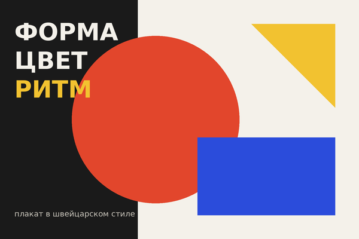
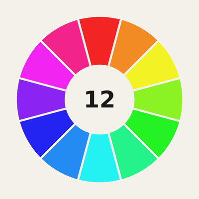

Направления графического дизайна
Графический дизайн большой — разберём четыре главных направления.
Раздел 1. Брендинг
Раздел 2. Полиграфия и плакат
Раздел 3. Цифровой дизайн
Раздел 4. Цветовой круг
К началу
Раздел 1. Брендинг
Брендинг — это создание узнаваемого образа компании. Что входит в фирменный стиль:
- логотип
- фирменные цвета
- фирменные шрифты
- носители
- визитки и бланки
- упаковка
- вывески
Раздел 2. Полиграфия и плакат
Плакат должен считываться за пару секунд. Швейцарский стиль добился этого простыми геометрическими формами, сеткой и гротеском.
Нажми на миниатюру — плакат откроется в полном размере 600 × 400 в новой вкладке:

Раздел 3. Цифровой дизайн
- Веб-сайты
- Мобильные приложения
- Моушн-дизайн
- анимация логотипов
- титры к видео
Раздел 4. Цветовой круг

С помощью круга подбирают цветовые сочетания:
- Монохромное — оттенки одного цвета
- Аналоговое — соседние цвета
- Комплементарное — противоположные цвета
- Триада — три цвета на равном расстоянии